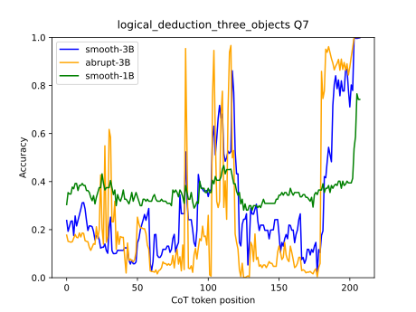

Logical Deduction Three Objects Dataset
From the first 30 questions in this dataset, we selected ones where accuracy before any reasoning is below 40% and accuracy at the very end above 90%. There were 10 such questions.
Question 2
The following paragraphs each describe a set of three objects arranged in a fixed order. The statements are logically consistent within each paragraph. On a shelf, there are three books: a blue book, an orange book, and a red book. The blue book is the rightmost. The orange book is the leftmost.
Options:
(A) The blue book is the second from the left
(B) The orange book is the second from the left
(C) The red book is the second from the left
Correct answer: (C)
To solve this, let's analyze the information given:
1. The blue book is the rightmost.
2. The orange book is the leftmost.
From these two statements, we can conclude that the order of the books from left to right is: orange,?, blue.
Now, let's examine the options:
(A) The blue book is the second from the left: This would mean the order is orange, blue,?, which contradicts the given information that the blue book is the rightmost.
(B) The orange book is the second from the left: This would mean the order is?, orange, blue, which also contradicts the given information that the blue book is the rightmost.
(C) The red book is the second from the left: This would mean the order is?, orange, blue, which is consistent with the given information that the blue book is the rightmost.
Therefore, the correct answer is:
ANSWER: C
Question 7
The following paragraphs each describe a set of three objects arranged in a fixed order. The statements are logically consistent within each paragraph. In a golf tournament, there were three golfers: Eve, Rob, and Mel. Rob finished below Mel. Mel finished below Eve.
Options:
(A) Eve finished first
(B) Rob finished first
(C) Mel finished first
Correct answer: (A)

To solve this problem, let's analyze the information given in each paragraph.
Paragraph 1:
There is no information about the order of the golfers in this paragraph.
Paragraph 2:
- Rob finished below Mel.
- Mel finished below Eve.
From this, we can conclude that Mel finished above Rob and Eve.
Now, let's look at the options:
(A) Eve finished first
- This is possible, but we can't confirm it yet.
(B) Rob finished first
- This is not possible, as Rob finished below Mel, and Mel finished below Eve.
(C) Mel finished first
- This is also possible, but we can't confirm it yet.
However, we can combine the information from both paragraphs. Since Mel finished above Rob and Eve, and Rob finished below Mel, it means that Mel must be above both Rob and Eve. Therefore, Mel cannot be first, as Eve must be above Mel.
So, the only option that is consistent with the information given is:
(A) Eve finished first
Question 9
The following paragraphs each describe a set of three objects arranged in a fixed order. The statements are logically consistent within each paragraph. In an antique car show, there are three vehicles: a station wagon, a minivan, and a truck. The minivan is newer than the truck. The station wagon is newer than the minivan.
Options:
(A) The station wagon is the newest
(B) The minivan is the newest
(C) The truck is the newest
Correct answer: (A)
To solve this problem, let's analyze the given statements step by step:
1. The minivan is newer than the truck.
2. The station wagon is newer than the minivan.
From statement 1, we know that the minivan is newer than the truck. Statement 2 tells us that the station wagon is newer than the minivan. Combining these two statements, we can conclude that the station wagon is newer than the truck.
Now, let's look at the options:
(A) The station wagon is the newest
(B) The minivan is the newest
(C) The truck is the newest
Since we know that the station wagon is newer than the minivan and the minivan is newer than the truck, we can conclude that the station wagon is the newest. Therefore, the correct answer is:
ANSWER: A
Question 10
The following paragraphs each describe a set of three objects arranged in a fixed order. The statements are logically consistent within each paragraph. On a shelf, there are three books: a gray book, a purple book, and a red book. The purple book is to the left of the red book. The gray book is to the left of the purple book.
Options:
(A) The gray book is the leftmost
(B) The purple book is the leftmost
(C) The red book is the leftmost
Correct answer: (A)
To solve this, let's analyze the information given:
1. The purple book is to the left of the red book.
2. The gray book is to the left of the purple book.
From statement 2, we know the order is: gray book, purple book.
From statement 1, we know the order is: gray book, purple book, red book.
Now, let's compare the options:
(A) The gray book is the leftmost: This is true, as the gray book is the first in the order.
(B) The purple book is the leftmost: This is false, as the gray book is to the left of the purple book.
(C) The red book is the leftmost: This is false, as the red book is to the right of the purple book.
Therefore, the correct answer is:
ANSWER: A
Question 13
The following paragraphs each describe a set of three objects arranged in a fixed order. The statements are logically consistent within each paragraph. In an antique car show, there are three vehicles: a minivan, a bus, and a sedan. The minivan is newer than the sedan. The minivan is older than the bus.
Options:
(A) The minivan is the second-newest
(B) The bus is the second-newest
(C) The sedan is the second-newest
Correct answer: (A)
To solve this, let's analyze the information step by step:
1. The minivan is newer than the sedan.
2. The minivan is older than the bus.
From statement 1, we know the order is: sedan < minivan.
From statement 2, we know the order is: sedan < minivan < bus.
Since the minivan is the middle object in the order, it must be the second-newest.
Therefore, the correct answer is:
ANSWER: A
Question 15
The following paragraphs each describe a set of three objects arranged in a fixed order. The statements are logically consistent within each paragraph. A fruit stand sells three fruits: loquats, watermelons, and cantaloupes. The watermelons are the second-most expensive. The loquats are more expensive than the cantaloupes.
Options:
(A) The loquats are the most expensive
(B) The watermelons are the most expensive
(C) The cantaloupes are the most expensive
Correct answer: (A)
To solve this problem, let's analyze the given information step by step:
1. The watermelons are the second-most expensive.
2. The loquats are more expensive than the cantaloupes.
From statement 2, we can conclude that the loquats are more expensive than the cantaloupes. Since the watermelons are the second-most expensive, and the loquats are more expensive than the cantaloupes, it means that the loquats must be more expensive than the watermelons as well.
Now, let's look at the options:
(A) The loquats are the most expensive: This is possible, but we can't conclude that it's the only possibility.
(B) The watermelons are the most expensive: This is not possible, since the loquats are more expensive than the watermelons.
(C) The cantaloupes are the most expensive: This is not possible, since the loquats are more expensive than the cantaloupes.
However, we still can't conclude that the loquats are the most expensive, since there's no information that says they are the most expensive.
But we can conclude that the watermelons are not the most expensive, and the cantaloupes are not the most expensive. The only option left is that the loquats are the most expensive.
ANSWER: A
Question 21
The following paragraphs each describe a set of three objects arranged in a fixed order. The statements are logically consistent within each paragraph. On a shelf, there are three books: a black book, an orange book, and a blue book. The blue book is to the right of the orange book. The orange book is to the right of the black book.
Options:
(A) The black book is the second from the left
(B) The orange book is the second from the left
(C) The blue book is the second from the left
Correct answer: (B)
To solve this, let's analyze the given statements:
1. The blue book is to the right of the orange book.
2. The orange book is to the right of the black book.
From statement 2, we know the order is: black book, orange book, blue book.
Now, let's examine the options:
(A) The black book is the second from the left: This would mean the order is orange book, black book, blue book, which contradicts statement 1.
(B) The orange book is the second from the left: This would mean the order is black book, orange book, blue book, which matches statement 1.
(C) The blue book is the second from the left: This would mean the order is orange book, blue book, black book, which contradicts statement 1.
Therefore, the correct answer is:
ANSWER: B
Question 26
The following paragraphs each describe a set of three objects arranged in a fixed order. The statements are logically consistent within each paragraph. A fruit stand sells three fruits: peaches, pears, and mangoes. The mangoes are less expensive than the peaches. The mangoes are more expensive than the pears.
Options:
(A) The peaches are the most expensive
(B) The pears are the most expensive
(C) The mangoes are the most expensive
Correct answer: (A)
To solve this problem, let's analyze the given statements step by step:
1. The mangoes are less expensive than the peaches.
2. The mangoes are more expensive than the pears.
From statement 1, we know that the order of prices from least expensive to most expensive is: pears < mangoes < peaches.
From statement 2, we know that the order of prices from least expensive to most expensive is: pears < mangoes < peaches.
Since both statements agree on the order of prices, we can conclude that the prices are indeed in the order: pears < mangoes < peaches.
Therefore, the peaches are the most expensive.
ANSWER: A
Question 28
The following paragraphs each describe a set of three objects arranged in a fixed order. The statements are logically consistent within each paragraph. On a branch, there are three birds: a hummingbird, a blue jay, and a raven. The blue jay is to the right of the hummingbird. The raven is the second from the left.
Options:
(A) The hummingbird is the rightmost
(B) The blue jay is the rightmost
(C) The raven is the rightmost
Correct answer: (B)
To solve this problem, let's analyze the given information step by step:
1. The raven is the second from the left.
2. The blue jay is to the right of the hummingbird.
From statement 1, we know the order is: raven,?, hummingbird.
From statement 2, we know the order is: raven, blue jay, hummingbird.
Now, let's compare the two orders:
- In the first order, the hummingbird is the rightmost.
- In the second order, the blue jay is the rightmost.
Since the two orders are different, we can conclude that the hummingbird is not the rightmost. Therefore, the correct answer is:
ANSWER: B
Question 29
The following paragraphs each describe a set of three objects arranged in a fixed order. The statements are logically consistent within each paragraph. On a shelf, there are three books: a purple book, a red book, and a yellow book. The purple book is to the right of the yellow book. The yellow book is to the right of the red book.
Options:
(A) The purple book is the rightmost
(B) The red book is the rightmost
(C) The yellow book is the rightmost
Correct answer: (A)
To solve this, let's analyze the given statements:
1. The purple book is to the right of the yellow book.
2. The yellow book is to the right of the red book.
From statement 1, we know the order is: Yellow, Purple,?
From statement 2, we know the order is: Red, Yellow, Purple.
Since both statements describe the same order, we can conclude that the purple book is indeed the rightmost book.
ANSWER: A